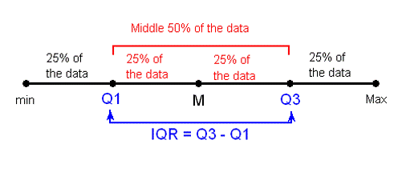
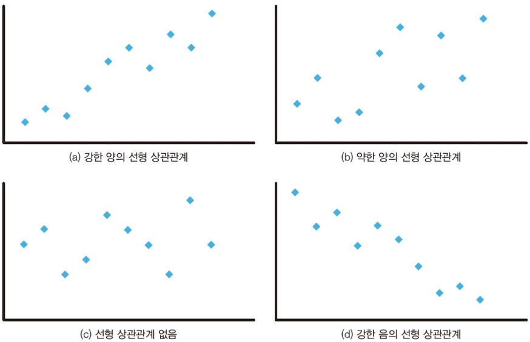

import numpy as np
import pandas as pd
- 기술통계
7.1. 데이터 유형
- 데이터의 특성에 따라 적용할 수 있는 분석 방법이나 시각화 기법이 달라지므로, 제일 먼저 변수의 유형을 파악해야 함
| 구분 | 설명 | 예시 |
|---|---|---|
| 범주형 변수 (categorical variable) |
- 고정된 범주(집단) 중 하나의 값을 가지는 변수 - 기본적으로 숫자로 표현할 수 없고, 대소 비교나 산술 연산이 적용되지 않음 - 범주형 변수를 숫자로 표기했다고 해서 계산 가능한 수치형 변수가 되는 것은 아님 |
- 성별(남성, 여성) - 종교(있음, 없음) |
| 수치형 변수 (numerical variagle) |
- 연산 가능한 수치 값을 가지는 변수 - 대소 비교가 가능하고, 산술 연산이 가능함 |
- 키(cm) - 몸무게(kg) |
7.2. 변수 요약
7.2.1. 범주형 변수 요약
- 빈도표 : 하나의 범주형 변수의 분포를 파악하기 위해 범주별 빈도를 정리한 표
- 분할표 : 두 개의 범주형 변수의 분포를 파악하기 위해 한 변수의 범주는 행에, 다른 변수의 범주는 열에 배치하여 교차되는 칸에 해당 빈도를 정리한 표
## 실습 데이터 : tips 데이터셋
import seaborn as sns
tips = sns.load_dataset('tips')# total_bill: 식사 금액
# tip: 팁 금액
# sex: 성별
# smoker: 흡연 여부
# day: 요일
# time: 식사 시간(Lunch, Dinner)
# size: 식사 인원 수
print(tips.info())<class 'pandas.core.frame.DataFrame'>
RangeIndex: 244 entries, 0 to 243
Data columns (total 7 columns):
# Column Non-Null Count Dtype
--- ------ -------------- -----
0 total_bill 244 non-null float64
1 tip 244 non-null float64
2 sex 244 non-null category
3 smoker 244 non-null category
4 day 244 non-null category
5 time 244 non-null category
6 size 244 non-null int64
dtypes: category(4), float64(2), int64(1)
memory usage: 7.4 KB
None# 빈도표1 : 요일별 주문 수
print(tips.value_counts('day'))day
Sat 87
Sun 76
Thur 62
Fri 19
Name: count, dtype: int64# 빈도표2 : 요일별 주문 비율
print(tips.value_counts('day', normalize=True))day
Sat 0.356557
Sun 0.311475
Thur 0.254098
Fri 0.077869
Name: proportion, dtype: float64# 빈도표3 : 요일별 주문 수 및 비율 (범주 순서 지정)
days = ['Thur', 'Fri', 'Sat', 'Sun']
cat_type = pd.CategoricalDtype(categories=days, ordered=True)
tips['day'] = tips['day'].astype(cat_type)
freqency = tips['day'].value_counts().sort_index()
proportion = tips['day'].value_counts(normalize=True).sort_index()
summary = pd.DataFrame({'빈도': freqency, '비율': proportion})
print(summary) 빈도 비율
day
Thur 62 0.254098
Fri 19 0.077869
Sat 87 0.356557
Sun 76 0.311475# 교차표1 : 요일에 따른 식사 시간 빈도
print(pd.crosstab(tips['day'], tips['time']))time Lunch Dinner
day
Thur 61 1
Fri 7 12
Sat 0 87
Sun 0 76# 교차표2 : 요일에 따른 식사 시간 비율 (전체 %)
print(pd.crosstab(tips['day'], tips['time'], normalize=True))time Lunch Dinner
day
Thur 0.250000 0.004098
Fri 0.028689 0.049180
Sat 0.000000 0.356557
Sun 0.000000 0.311475# 교차표3 : 요일에 따른 식사 시간 비율 (행 기준 %)
print(pd.crosstab(tips['day'], tips['time'], normalize='index'))time Lunch Dinner
day
Thur 0.983871 0.016129
Fri 0.368421 0.631579
Sat 0.000000 1.000000
Sun 0.000000 1.000000# 교차표4 : 요일에 따른 식사 시간 비율 (열 기준 %)
print(pd.crosstab(tips['day'], tips['time'], normalize='columns'))time Lunch Dinner
day
Thur 0.897059 0.005682
Fri 0.102941 0.068182
Sat 0.000000 0.494318
Sun 0.000000 0.4318187.2.2. 수치형 변수 요약
- 중심위치 : 자료를 하나의 숫자로 표현할 수 있는 값으로, 분포의 중심을 나타냄
- 평균(mean) : 모든 값을 더한 후 데이터 개수로 나눈 값으로, 이상값의 영향을 크게 받음
- 중앙값(median) : 데이터를 크기 순으로 정렬했을 때 중앙에 위치하는 값으로, 이상값의 영향을 거의 받지 않음
- 산포도 : 데이터가 흩어져 있는 정도로, 중심위치의 대표성을 평가하는데 중요함
- 분산(variance) : 각 데이터가 평균과 얼마나 떨어져 있는지 제곱한 값들의 평균
- 표준편차(standard deviation) : 분산의 양의 제곱근으로, 평균과 단위가 같아 해석이 용이함
- 산포도가 작으면 데이터들이 중심위치에 모여 있다는 것을 의미함
- 사분위수(quartiles) : 데이터를 4등분하는 값
- 최소값
- 1사분위수(Q₁) : 데이터의 25% 순서에 있는 값
- 중앙값
- 3사분위수(Q₃) : 데이터의 75% 순서에 있는 값
- 최대값
- 사분위수범위(IQR) : Q₃ - Q₁으로, 중앙값에 대한 산포도를 나타냄

- 분포의 모양
- 왜도(skewness)
- 데이터의 비대칭 정도를 나타냄
- 0이면 대칭, 음수이면 왼쪽으로 꼬리가 긴 분포(skewed to left), 양수이면 오른쪽으로 꼬리가 긴 분포(skewed to right)임
- 첨도(kurtosis)
- 데이터가 중심위치에 얼마나 모여 있는가를 나타냄
- 0이면 정규분포와 유사, 양수이면 중심에 많이 모여 있음(뾰족함), 음수이면 넓게 퍼져있음(완만함)
- [참고]) Python은 초과 첨도를 기준으로 하여, 정규분포를 0으로 간주함
- 왜도(skewness)
from scipy import stats# 요약 통계1 : 식사 금액 분포
print(tips['total_bill'].describe())count 244.000000
mean 19.785943
std 8.902412
min 3.070000
25% 13.347500
50% 17.795000
75% 24.127500
max 50.810000
Name: total_bill, dtype: float64# 요약 통계2 : 팁 금액 분포
summary = stats.describe(tips['tip'])
print(f'nobs: {summary.nobs}')
print(f'min-max: {summary.minmax}')
print(f'mean: {summary.mean:.2f}')
print(f'variance: {summary.variance:.2f}')
print(f'skewness: {summary.skewness:.2f}')
print(f'kurtosis: {summary.kurtosis:.2f}')nobs: 244
min-max: (1.0, 10.0)
mean: 3.00
variance: 1.91
skewness: 1.46
kurtosis: 3.557.3. 변수 간 관계
7.3.1. 집단별 비교
- 집단별로 수치형 변수의 분포(평균, 중앙값, 표준편차, 사분위수 등)를 비교함으로써 집단 간 차이를 파악할 수 있음
# 흡연 여부별 팁 금액 분포
print(tips.groupby('smoker', observed=True)['total_bill'].describe()) count mean std min 25% 50% 75% max
smoker
Yes 93.0 20.756344 9.832154 3.07 13.420 17.92 26.860 50.81
No 151.0 19.188278 8.255582 7.25 13.325 17.59 22.755 48.337.3.2. 상관관계
- 상관관계(correlation)
- 두 수치형 변수 간 선형적인 관계(linear relationship)를 나타냄
- 상관계수(correlation coefficient)
- 두 변수 간 상관관계를 수치로 나타낸 지표
- 변수 측정 단위의 영향을 받지 않음
- 상관계수의 성질
- 상관계수 r은 항상 -1에서 +1 사이의 값을 가짐
- 절대값 |r|은 선형성의 강도를 나타내며, 1에 가까울수록 강한 상관관계를 의미함
- 부호는 선형 관계의 방향을 나타냄
- r > 0 : 양의 상관관계(한 변수가 증가할 때 다른 변수도 증가)
- r < 0 : 음의 상관관계(한 변수가 증가할 때 다른 변수는 감소)
- r ≈ 0 : 상관관계 없음(한 변수가 증가할 때 다른 변수는 영향을 받지 않음)

# 상관관계1 : 식사 금액과 팁 금액 간 상관계수
from scipy.stats import pearsonr
r, p = pearsonr(tips['total_bill'], tips['tip'])
print(f'상관계수: {r:.2f}, p-value: {p:.3f}')상관계수: 0.68, p-value: 0.000# 상관관계2 : 식사 금액, 식사 인원 수와 팁 금액 간 상관계수
tips[['total_bill', 'size', 'tip']].corr()| total_bill | size | tip | |
|---|---|---|---|
| total_bill | 1.000000 | 0.598315 | 0.675734 |
| size | 0.598315 | 1.000000 | 0.489299 |
| tip | 0.675734 | 0.489299 | 1.000000 |
7.4. 결측값 처리
- 결측값(missing value)
- Python에서는 누락된 데이터를
NaN(Not a Number)로 표기하며, 연산 시 자동으로 제외함 - 데이터프레임에서
isna(),isnull()메소드를 이용하면 결측값을 확인할 수 있음
- Python에서는 누락된 데이터를
- 결측값 처리 방법
- 가장 단순한 방법은
dropna()메소드를 이용하여 결측값이 포함된 행이나 열을 삭제하는 것임axis=0이면 행,axis=1이면 열을 삭제함
fillna()메소드를 이용하여 결측값을 최빈값이나 평균, 중앙값으로 대체할 수도 있음
- 가장 단순한 방법은
## 실습 데이터 : titanic
titanic = sns.load_dataset('titanic')# survived: 생존 여부(0, 1)
# pclass: 객실 등급(1, 2, 3)
# sex: 성별
# age: 나이
# sibsp: 함께 탑승한 형제자매, 배우자 수
# parch: 함께 탑승한 부모, 자식 수
# fare: 요금
# embarked: 탑승 항구(S, C, Q)
# class: 객실 등급(First, Second, Third)
# who: 사람 구분(man, woman, child)
# adult_male: 성인 남자 여부(True, False)
# deck: 갑판
# embark_town: 탑승 항구(Southhampton, Cherbourg, Queenstown)
# alive: 생존여부(no, yes)
# alone: 1인 탑승 여부(True, False)
titanic.info()<class 'pandas.core.frame.DataFrame'>
RangeIndex: 891 entries, 0 to 890
Data columns (total 15 columns):
# Column Non-Null Count Dtype
--- ------ -------------- -----
0 survived 891 non-null int64
1 pclass 891 non-null int64
2 sex 891 non-null object
3 age 714 non-null float64
4 sibsp 891 non-null int64
5 parch 891 non-null int64
6 fare 891 non-null float64
7 embarked 889 non-null object
8 class 891 non-null category
9 who 891 non-null object
10 adult_male 891 non-null bool
11 deck 203 non-null category
12 embark_town 889 non-null object
13 alive 891 non-null object
14 alone 891 non-null bool
dtypes: bool(2), category(2), float64(2), int64(4), object(5)
memory usage: 80.7+ KB# 결측값 확인
titanic[titanic['embarked'].isna()]| survived | pclass | sex | age | sibsp | parch | fare | embarked | class | who | adult_male | deck | embark_town | alive | alone | |
|---|---|---|---|---|---|---|---|---|---|---|---|---|---|---|---|
| 61 | 1 | 1 | female | 38.0 | 0 | 0 | 80.0 | NaN | First | woman | False | B | NaN | yes | True |
| 829 | 1 | 1 | female | 62.0 | 0 | 0 | 80.0 | NaN | First | woman | False | B | NaN | yes | True |
# 각 열별 결측값 개수 확인
# 부울형은 산술 연산 시 True는 1, False는 0으로 계산되므로
# isna() 결과에 sum()을 적용하면 결측값 개수가 계산됨
titanic.isna().sum()survived 0
pclass 0
sex 0
age 177
sibsp 0
parch 0
fare 0
embarked 2
class 0
who 0
adult_male 0
deck 688
embark_town 2
alive 0
alone 0
dtype: int64# 결측값이 많이 포함된 열 삭제
titanic.drop('deck', axis=1, inplace=True)
titanic.columnsIndex(['survived', 'pclass', 'sex', 'age', 'sibsp', 'parch', 'fare',
'embarked', 'class', 'who', 'adult_male', 'embark_town', 'alive',
'alone'],
dtype='object')# age 변수를 제외한 변수들 중 결측값이 하나라도 포함된 행 삭제
cols = titanic.columns.difference(['age'])
titanic_new = titanic.dropna(subset=cols, how='any')
titanic_new.isna().sum()survived 0
pclass 0
sex 0
age 177
sibsp 0
parch 0
fare 0
embarked 0
class 0
who 0
adult_male 0
embark_town 0
alive 0
alone 0
dtype: int64# 결측값을 최빈값으로 대체
mode = titanic['embarked'].mode()[0]
titanic['embarked'] = titanic['embarked'].fillna(mode)
titanic.isna().sum()survived 0
pclass 0
sex 0
age 177
sibsp 0
parch 0
fare 0
embarked 0
class 0
who 0
adult_male 0
embark_town 2
alive 0
alone 0
dtype: int64# 결측값을 중앙값으로 대체
median = titanic.groupby(['sex', 'who'])['age'].transform('median')
titanic['age'] = titanic['age'].fillna(median)
titanic.isna().sum()survived 0
pclass 0
sex 0
age 0
sibsp 0
parch 0
fare 0
embarked 0
class 0
who 0
adult_male 0
embark_town 2
alive 0
alone 0
dtype: int647.5. 이상값 처리
- 이상값(outlier)
- 대부분의 데이터가 분포된 범위를 벗어나 극단적으로 크거나 작은 값
- 데이터 분석과 모델링 과정에서 결과에 큰 영향을 미칠 수 있음
- 이상값 탐지 방법
- 사분위수범위(IQR) 활용 : (Q₁-1.5×IQR, Q₃+1.5×IQR) 범위를 벗어나는 값을 이상값으로 판단
- 표준점수(Z-score) 활용 : 분포가 대칭일때, 일반적으로 |Z|>3인 값을 이상값으로 판단
- 이상값 처리 방법
- 이상값이 소수이고 데이터 손실이 크지 않다면 해당 데이터를 삭제
- 평균, 중앙값 등 적절한 값으로 대체 가능
- 로그 변환, 제곱근 변환 등 데이터 변환 기법 활용
# 이상값 반환 함수1 : 사분위수 범위(IQR) 활용
def iqr_outlier(data, column):
col_data = data[column].dropna()
Q1 = col_data.quantile(0.25)
Q3 = col_data.quantile(0.75)
IQR = Q3 - Q1
lower_bound = Q1 - 1.5 * IQR
upper_bound = Q3 + 1.5 * IQR
outliers = data[(data[column] < lower_bound) | (data[column] > upper_bound)]
return outliers
# 각 열별 이상값 개수 확인
for column in titanic.select_dtypes(include='number').columns:
outlier = iqr_outlier(titanic, column)
print(f'{column} 변수의 이상값 개수: {len(outlier)}')survived 변수의 이상값 개수: 0
pclass 변수의 이상값 개수: 0
age 변수의 이상값 개수: 66
sibsp 변수의 이상값 개수: 46
parch 변수의 이상값 개수: 213
fare 변수의 이상값 개수: 116# age 변수의 이상값을 제외한 데이터프레임
outliers_age = iqr_outlier(titanic, 'age')
titanic_new = titanic.drop(index=outliers_age.index)
titanic_new| survived | pclass | sex | age | sibsp | parch | fare | embarked | class | who | adult_male | embark_town | alive | alone | |
|---|---|---|---|---|---|---|---|---|---|---|---|---|---|---|
| 0 | 0 | 3 | male | 22.0 | 1 | 0 | 7.2500 | S | Third | man | True | Southampton | no | False |
| 1 | 1 | 1 | female | 38.0 | 1 | 0 | 71.2833 | C | First | woman | False | Cherbourg | yes | False |
| 2 | 1 | 3 | female | 26.0 | 0 | 0 | 7.9250 | S | Third | woman | False | Southampton | yes | True |
| 3 | 1 | 1 | female | 35.0 | 1 | 0 | 53.1000 | S | First | woman | False | Southampton | yes | False |
| 4 | 0 | 3 | male | 35.0 | 0 | 0 | 8.0500 | S | Third | man | True | Southampton | no | True |
| ... | ... | ... | ... | ... | ... | ... | ... | ... | ... | ... | ... | ... | ... | ... |
| 886 | 0 | 2 | male | 27.0 | 0 | 0 | 13.0000 | S | Second | man | True | Southampton | no | True |
| 887 | 1 | 1 | female | 19.0 | 0 | 0 | 30.0000 | S | First | woman | False | Southampton | yes | True |
| 888 | 0 | 3 | female | 30.0 | 1 | 2 | 23.4500 | S | Third | woman | False | Southampton | no | False |
| 889 | 1 | 1 | male | 26.0 | 0 | 0 | 30.0000 | C | First | man | True | Cherbourg | yes | True |
| 890 | 0 | 3 | male | 32.0 | 0 | 0 | 7.7500 | Q | Third | man | True | Queenstown | no | True |
825 rows × 14 columns
# 이상값 반환 함수2 : Z-score 활용
def z_outlier(df, c, t=3):
from scipy.stats import zscore
z = zscore(df[c].dropna())
return df.loc[df[c].dropna().index[(abs(z) > t)]]
for column in titanic.select_dtypes(include='number').columns:
outlier = z_outlier(titanic, column)
print(f'{column} 변수의 이상값 개수: {len(outlier)}')survived 변수의 이상값 개수: 0
pclass 변수의 이상값 개수: 0
age 변수의 이상값 개수: 7
sibsp 변수의 이상값 개수: 30
parch 변수의 이상값 개수: 15
fare 변수의 이상값 개수: 20# age 변수의 이상값을 제외한 데이터프레임
outliers_age = z_outlier(titanic, 'age')
titanic_new = titanic.drop(index=outliers_age.index)
titanic_new| survived | pclass | sex | age | sibsp | parch | fare | embarked | class | who | adult_male | embark_town | alive | alone | |
|---|---|---|---|---|---|---|---|---|---|---|---|---|---|---|
| 0 | 0 | 3 | male | 22.0 | 1 | 0 | 7.2500 | S | Third | man | True | Southampton | no | False |
| 1 | 1 | 1 | female | 38.0 | 1 | 0 | 71.2833 | C | First | woman | False | Cherbourg | yes | False |
| 2 | 1 | 3 | female | 26.0 | 0 | 0 | 7.9250 | S | Third | woman | False | Southampton | yes | True |
| 3 | 1 | 1 | female | 35.0 | 1 | 0 | 53.1000 | S | First | woman | False | Southampton | yes | False |
| 4 | 0 | 3 | male | 35.0 | 0 | 0 | 8.0500 | S | Third | man | True | Southampton | no | True |
| ... | ... | ... | ... | ... | ... | ... | ... | ... | ... | ... | ... | ... | ... | ... |
| 886 | 0 | 2 | male | 27.0 | 0 | 0 | 13.0000 | S | Second | man | True | Southampton | no | True |
| 887 | 1 | 1 | female | 19.0 | 0 | 0 | 30.0000 | S | First | woman | False | Southampton | yes | True |
| 888 | 0 | 3 | female | 30.0 | 1 | 2 | 23.4500 | S | Third | woman | False | Southampton | no | False |
| 889 | 1 | 1 | male | 26.0 | 0 | 0 | 30.0000 | C | First | man | True | Cherbourg | yes | True |
| 890 | 0 | 3 | male | 32.0 | 0 | 0 | 7.7500 | Q | Third | man | True | Queenstown | no | True |
884 rows × 14 columns
# [참고] 변수 분포의 왜도를 확인하고, 적절한 이상값 탐지 방법(IQR, Z-score)을 선택
for column in titanic.select_dtypes(include='number').columns:
print(f'{column} 변수의 왜도: {stats.skew(titanic[column]):.3f}')survived 변수의 왜도: 0.478
pclass 변수의 왜도: -0.629
age 변수의 왜도: 0.420
sibsp 변수의 왜도: 3.689
parch 변수의 왜도: 2.744
fare 변수의 왜도: 4.779